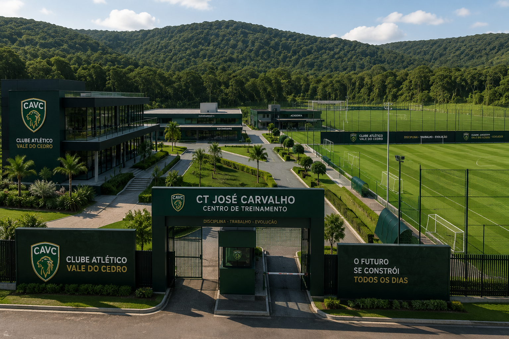

Onde o Leão do Vale se prepara para vencer.
Conheça os espaços que fazem parte da rotina do Clube Atlético Vale do Cedro dentro e fora dos gramados.

Arena do Cedro
A casa do Clube Atlético Vale do Cedro é o ponto de encontro entre o clube, seus atletas e a torcida.
Com uma estrutura moderna e pensada para oferecer conforto ao torcedor e alto desempenho aos atletas, a Arena do Cedro representa a evolução de um clube jovem que busca construir seu próprio legado.
Uma casa preparada para grandes momentos
Cada detalhe da Arena foi planejado para aproximar o torcedor do clube e oferecer uma experiência completa.
Camarotes VIP
Espaços exclusivos para convidados, parceiros e experiências especiais.
Iluminação LED
Sistema moderno preparado para partidas noturnas e grandes eventos.
Tecnologia VAR
Estrutura tecnológica integrada ao futebol profissional do clube.
Academia Integrada
Espaço dedicado à preparação física e recuperação dos atletas.
CT José Carvalho
O Centro de Treinamento José Carvalho é o coração do desenvolvimento esportivo do Clube Atlético Vale do Cedro.
O complexo reúne campos, áreas de preparação física, departamentos médicos e espaços dedicados ao desenvolvimento completo dos atletas.
Conhecer o complexo
Tudo para formar atletas completos
O CAVC acredita que o desenvolvimento de um atleta acontece muito além dos 90 minutos.
Campos Oficiais
Três campos oficiais preparados para os trabalhos do futebol profissional e das categorias de base.
Campo Sintético
Área destinada a treinamentos específicos, trabalhos técnicos e atividades complementares.
Academia
Equipamentos para preparação física, fortalecimento e prevenção de lesões.
Fisioterapia
Atendimento especializado para recuperação e acompanhamento dos atletas.
Piscina de Recuperação
Estrutura dedicada aos processos de recuperação física após treinos e partidas.
Hotel dos Atletas
Alojamento integrado para oferecer conforto e concentração aos jogadores.
Departamento Médico
Acompanhamento médico e suporte especializado para o elenco profissional.
Análise de Desempenho
Dados e tecnologia para acompanhar a evolução individual e coletiva da equipe.
O futebol moderno exige uma estrutura completa.
Por isso, o CAVC também conta com espaços dedicados à análise, planejamento e desenvolvimento humano dos seus profissionais.